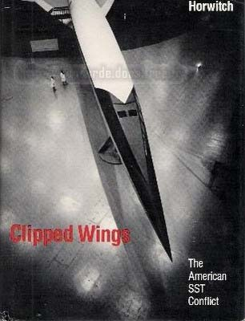

Voici quelques ouvrages concernant les avions ayants marqué l'histoire de Concorde :
Clipped Wings - 1982 - Mel Horwitch - MIT press - 23x15 473p 

Le livre de référence sur le boeing 2707. Cet Ouvrage Américain permet de bien comprendre dans
quel contexte social et politique est né, s'est développé et est mort le projet de supersonique Américain.
SST the supersonic transport - juil 1970 - Mike Gravel - Aerospace magazine - 18p 
Revue Anglo-Saxonne, avec un article sur le Boeing 2707.
The US SST - printemps/été 1969 - Karl G. Harr Jr - Aerospace magazine - 18p 
Revue Anglo-Saxonne, avec un article sur le Boeing 2707 :"The United States SST - Asset for National Progress".
Gerfaut et Griffon - 2006 - Serge Kaplan & P. Ricco - Avia - 31x22 216p 
L'histoire détaillée de ces 2 avions qui ont participé à la maitrise par l'industrie aéronautique Française
de la conception des ailes delta en vol supersonique. Ils sont donc les précurseurs de Concorde.
Très détaillé, avec beaucoup d'images.
Tupolev Tu-144-Russia's Concorde-2005-Yefim Gordon & Vladimir Rigmant-Red star vol 24-125p
Ouvrage en Anglais - Pas de commentaires pour le moment.
Soviet SST-The Technopolitics Of The Tupolev 144-1989-Howard Moon-Orion Books-276p
Ouvrage en Anglais- Pas de commentaires pour le moment.
Flying the SR-71 Blackbird - 2008 - Richard H. Graham - Zenith Press - 24x16 288p 
Dans un style se rapprochand du livre du commandant Riley, ce livre en Anglais raconte dans les moindre détails comment piloter
lors d'une mission à bord du mythique SR-71 Blackbird. Conçu à la même époque que le Concorde,
le blackbird permet
de voir ce qu'on était capable d'obtenir avec les technologie de l'époque, sans se préoccuper du prix, du confort,
du nombre d'occupants ni de la consommation. Instructif, avec tout le suspens d'une mission d'espionnage.
Des photos en noir et blanc et en couleur dont certaines très rares (de crash notamment), ainsi que des schémas
et graphiques, et presque 100 pages de documents officiels (dont les check-lists du SR-71).
VALKYRIE - 2004 - Dennis R. Jenkins & Tony R. Landis - Specialty press - 23x23 264p 
Lui aussi conçu à la même époque que Concorde, le Valkyrie B70 est son pendant militaire.
Aérodynamiquement très proche du TU-144, il était capable de voler à mach 3. Mais arrivé plus tôt que Concorde,
l'électronique du Valkyrie n'était pas aussi évoluée.
L'auteur nous retrace en Anglais cette grande aventure,
avec beaucoup de schémas et de photos N&B et couleur dont certaines magnifiques. Un ouvrage très complet.